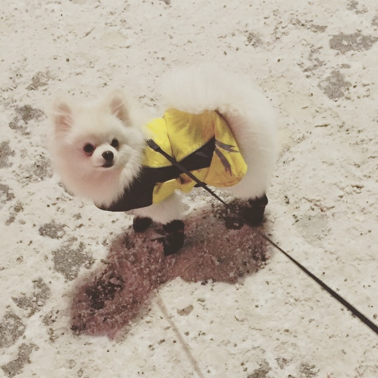

Pomeranians are typically friendly, lively and playful. They can be aggressive with other dogs and humans to try to prove themselves.[10][11] Pomeranians are alert and aware of changes in their environment, and barking at new stimuli can develop into a habit of barking excessively in any situation. They are somewhat defensive of their territory and thus may bark when they hear outside noises.[12] Pomeranians are intelligent, respond well to training, and can be very successful in getting what they want from their owners.[13] They are extroverted and enjoy being the center of attention, but they can become dominant, willful and stubborn if not well trained and socialized.[13] The use of toys can be an effective tool in training Pomeranians to spend time alone.

Exercise
The Pomeranian is a small but energetic breed of dog. Although Pomeranians benefit from frequent attention, they need relatively little exercise: it is recommended to take them on several daily walks and let them run around an enclosed space.[25]